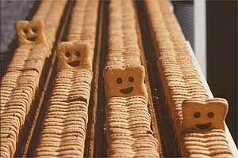

Forums galactiques > Taverne galactique : lieu de discussion informel > Plan Chapsotique
Pages : 1
| Kliketi Klang Réputation à la taverne : 0  26/08 ETU 15:31 | Score : 0 Détails Biggie se promenait dans les couloirs de son nouveau vaisseau aux couleurs de la red t. Non pas qu'il aime la red t, mais en fait il aimait bien le rouge. Les chaps étaient de nouveau à son service, et il comptait bien reprendre le pouvoir. Al-Kashi était mort, et l'avenir s'annonçait sombre.
*****010110011510111001010100***** Klipsy Bouni "Ici le lieutenant Bouni, nous avons repéré Dark-Maul, il barbotte dans sa piscine avec ses canaris, sa sulfureuse pin-up et sa bouée "Bilal 9-2". - Ramenez le moi Bou...ba !!!! AHAAHHAHAHAHAHAHAH **Rire diaboliquement machiavélique** - S'il vous plaît arrêtez de me rabaisser commandant. - D'accord. Et quand tu l'auras ramené, donne moi ton livre d'images de packball. - Mais monsieur.... (Il en avait les larmes aux yeux) Je ne peux pas l'abandonner.... Vous savez bien que... sans lui je ne dors plus ! - C'EST UN ORDRE FAIS PAS TON ANGEPHALLUS ! ANGEPHALLUS AHAHHAHAHAHAHAHAHAHHAHAHAHAHHH JE SUIS TROP DROLE AHAHAHHAHA *Fin de transmission* *****010110011710111001010100***** | ||
| Dark-Maul Réputation à la taverne : 6  26/08 ETU 15:39 | Score : 0 Détails Dark Maul reçu le message directement
HµM hµM Þr0Þ0§iTi0ñ ⣣é¢HâñTê. ** Dark maul reflechi longement et repanssa au moment vecu dans l'empire chapsique et en conclu une decision ** J'â¢êÞTê ! £'êMÞirê Ðê§ ¢hâÞ§ ñ'ê§T Þ⧠M0rT âµ ¢ 0ñTrâirê i£ viêñT Ðê rêñâiTrê ! M0µâ|-|â|-|â|-|â|-|ââ|-|â|-|â|-| !! ** Des chapsorages frappa la taverne violament !** L'EMPIRE CHAPSIQUE EST DE RETOUR ! | ||
| Kliketi Klang Réputation à la taverne : 0 26/08 ETU 15:53 | Score : 0 Détails "Merci d'avoir transmis le message et de m'avoir donné le livre d'images Bouni.
- De ... De rien monsieur... *snif snif* - Allez va-t-en maintenant !" Dark-Maul venait donc de rejoindre l'alliance chapsique... Les "A.G. Commandants" n'avaient qu'à bien se tenir. La Galaxie toute entière allait être secouée par ce come-back retentissant, sophistiqué, et gros bouffeur olf. VIVE LES CHAPS, BG & DM ! | ||
| Dark-Maul Réputation à la taverne : 6 26/08 ETU 16:01 | Score : 0 Détails ** Dark maul avait oublié
cette...sensation....ce..sentiment.chapso.il etait tant de passer a l'action ce 28/08/06 sera desormait un jours de féte, Str8 Outta Newdeun apportera le soutien necessair pour le devellopement de la flotte chapsique ** Fin de la transmition... |
Pages : 1
Forums galactiques > Taverne galactique : lieu de discussion informel > Plan Chapsotique